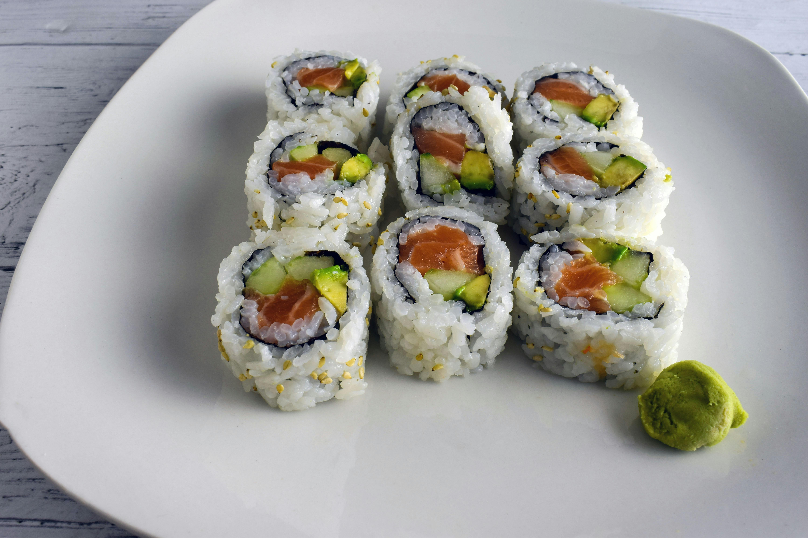

Tuna and Avocado Sushi

Description
A quick and simple delicious sushi recipe!
Ingredients
- 1/3 cup Japanese sushi-style rice
- 1/3 cup water
- 2 1/4 tsp rice vinegar
- 2 1/4 tsp white sugar
- 1 tsp salt
- 4 oz sashimi-grade yellowfin tuna cut into small chunks
- 1/3 cup mayonnaise
- 3 tsp chile oil
- 1 tsp sesame oil
- 1 tsp sriracha sauce
- 1 green onion, diced
- 3 sheets nori, cut in half
- 1/2 small ripe avocado, thinly sliced
- 1/4 English cucumber, cut into matchsticks
- Rinse rice in strainer until water runs clear.
-
Combine rice and water in a saucepan, bring to a boil.
Reduce heat to low, cover and cook for 20 minutes.
-
Combine rice vinegar, sugar, and salt in a small saucepan
over low heat, stir for 1 to 2 minutes. Pour over rice,
stir until rice cools and looks dry.
-
Mix tuna, mayonnaise, chili oil, sesame oil, sriracha sauce,
and green onion in a bowl with a fork, mashing to break up some of
the chunks.
-
Cover a bamboo sushi rolling mat with plastic wrap.
Lay 1 nori sheet, shiny-side down, on the mat.
Spread a thin layer of rice over the nori.
Layer avocado slices across the rice.
Flip nori sheet so avocado is against the mat.
Spread a generous layer of tuna mixture 3/4 of the way
down the back of the nori; top with cucumber matchsticks.
-
Roll up sushi with rolling mat, tucking in ends with the plastic wrap.
Remove plastic and place sushi roll on a plate.
- Repeat with remaining nori, rice, avocado, tuna mixture, and cucumber.
Home